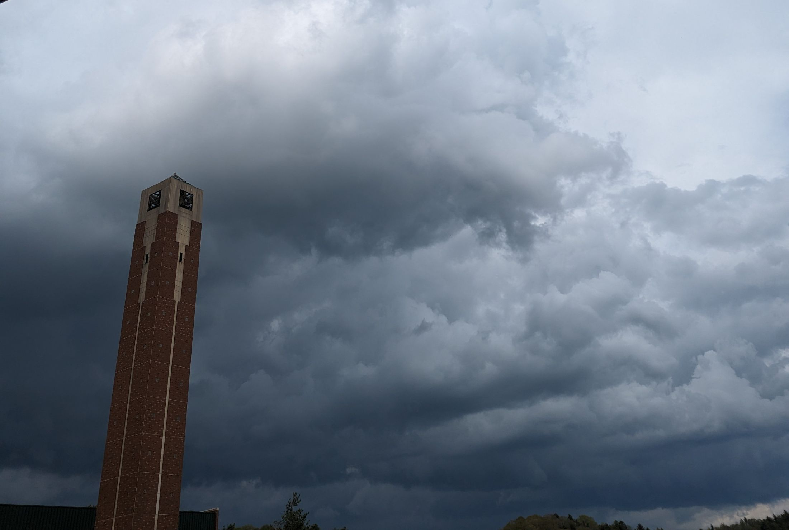

Afterlife Call-In Show
A story podcast assembled from found audio: a call-in show broadcast from hell, where the callers are historical figures and the hosts are demons.
I don't like listening to recordings of my own voice, so the show is built out of other people's. There are enough usable recordings of historical figures to fill out a call-in show, and putting them all in hell avoids picking on anyone's favorite celebrity or historical figure in particular. Imagine there's no heaven. Demon DJs do their own hellish drops. I can stand recording my own voice as the host if I get to do a demon voice. There'll be ambient sound and probably some music. I like to make art under certain constraints; it often has more interesting results, so I want the story to emerge organically from the sound files I'm able to find and legally use.
To come once the episode is finished.